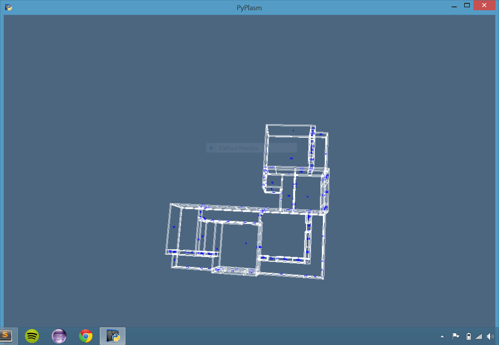
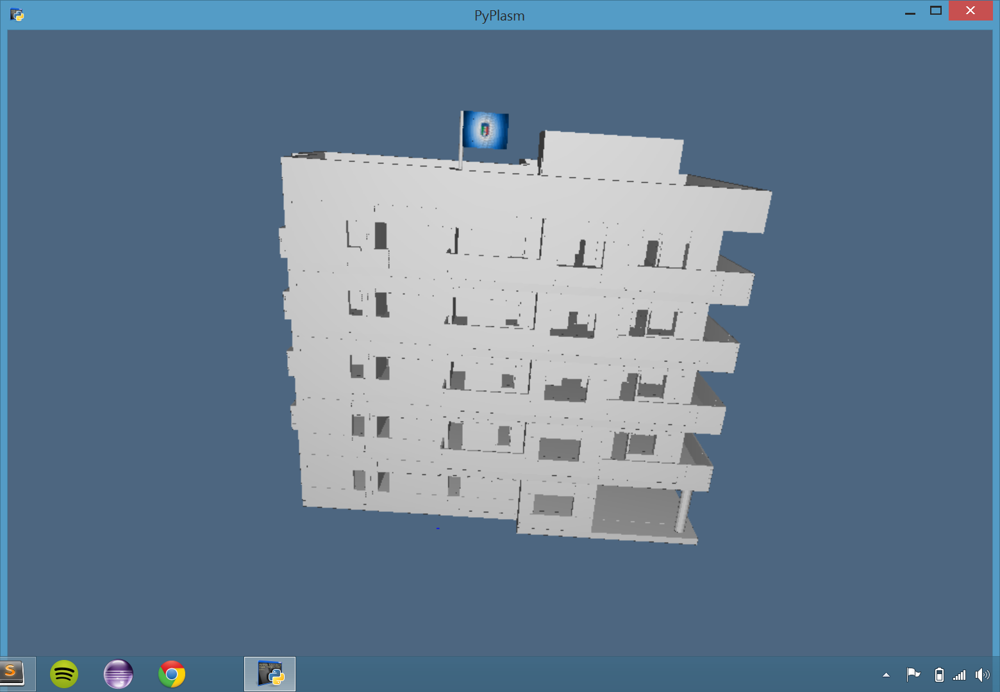

1. Loris Marsico
2. 438549
Breve descrizione del lavoro:
Nel primo esercizio ho ricreato in modo approssimato la struttura dell'appartamento della mia abitazione, ricreando la divisione delle stanze , la porta di accesso all'appartamento e le porte di accesso alle stanze nonchè le finestre delle ultime.
Nel secondo esercizio ho ricreato la struttura della palazzina suddivisa in piani aventi ognuno una suddivisione in appartamenti. Inoltre è stata ricreata la scala per l'accesso ai piani e l'atrio di ogni piano
Link alle immagini di riferimento:

